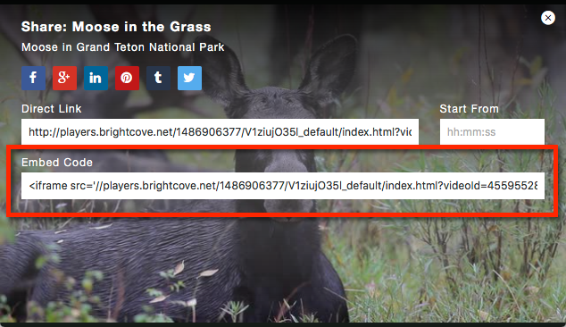

Social Media Plugin
The social media plugin enables users to share a video through Facebook, Google+, Twitter, Tumblr, Pinterest and LinkedIn.
Let's say you have a web page with a Brightcove player on it. Now, you want to let users share the video across social media services. With the social media plugin, you will see a social sharing icon in the title and description dock.
Note: If the player is configured to not display the title and description dock, the sharing icon will appear in the player controls area.
Clicking on this icon displays the social sharing screen, as shown here.
You will need to set a width and height for the player for two reasons:
- If no width or height are set there will be no values to pass to Twitter, which will cause the Twitter card not to validate.
- The width needs to be wide enough to accommodate the social plugin's interface as shown in the screenshot above. You can also have the interface automatically appear on video end using the
displayAfterVideoproperty, documented below.
Note: In Studio, there is an option to add social sharing to your player and in many cases will be sufficient for your needs. This document covers all aspects of using the social media plugin. The following screenshot pictures Studio's UI.
Click here for a working sample of a web page that uses the plugin and includes the social media meta tags.
Overview
This document walks you through the steps to enable social media sharing for an existing HTML page with your Brightcove player on it. This assumes that you have created a Brightcove player with the proper configuration information and have added the player to an HTML page.
To add the social media plugin, follow these steps:
Implement using Players module. This will update your Brightcove player to use the social media plugin.
- You will need the URL to the HTML page with your Brightcove player.
- Review the available properties to customize the social media plugin.
- Add social meta tags to your player's HTML page.
- Validate the meta tags on your HTML page for FaceBook and Twitter.
In a browser, open the HTML page with your Brightcove player and use the social sharing icon in the player to share your video.
Optionally, you can implement the social media plugin within your page code, but this is a more advanced solution. You may want to use this approach to include custom sharing URLs. For details, see the Customizing sharing URLs section.
Configure player
There are two ways to include social sharing with your player:
- In the Players module, configure properties in the Social Sharing sectionconfigure properties in the Social Sharing section.
- In the Players module, add the social sharing plugin to the Plugins section.
To add the social sharing plugin, follow these steps:
- Open the Players module and locate the player.
- Click the link for the player to open the player properties.
- Locate the Plugins section and click Edit.
- The JavaScript for the plugin is provided and will not change for different plugin implementations. For the JavaScript URL, enter:
//players.brightcove.net/videojs-social/3/videojs-social.min.js
- The CSS for the plugin is provided and will not change for different plugin implementations. For the CSS URL, enter:
//players.brightcove.net/videojs-social/3/videojs-social.css
- For the Name, enter social.
Enter the plugin options. The example below will display a social media button at the bottom of the player to share this video with several social media sites. The social sharing screen will automatically display on video end.
For details about the plugin options, see the Properties section.
- Lines 3-4: Set the name and description for your video.
- Line 5: Defines the URL for your custom web page with your video player and social sharing meta tags.
- Lines 6-7: For Twitter, this allows a user to start viewing the video after a 5 second offset.
Lines 8-14: Enables social sharing for Facebook, Google, Twitter, Tumblr, Pinterest and LinkedIn.

- Click Save and then Publish the player.
Properties
For plugins in general, the options object is used to pass data to the plugin to customize initialization. In this case, you can use the following properties in this object:
title
- Type: string
- This is a custom title that will appear when your video is shared.
description
- Type: string
- This is a custom description that will be used by the social services which support it.
url
- Type: string
- This is the URL that points to your custom web page which has your video and the meta tags for sharing. Refer to the meta tags section for details on how to add the social media metadata to your player page.
embedCode
- Type: string
- This is the Brightcove player iframe embed code for sharing the video. This allows you to completely override the contents of the Embed Code field located in the sharing dialog.

- You can get the value of this property by using the getEmbedCode() method.
displayAfterVideo
- Type: boolean
- Default:
false - Causes the social screen to automatically show on an
endedevent
deeplinking
- Type: boolean
- Default:
false This enables/disables deep linking for the shared video. This feature allows a user to start viewing a video from a specific offset. For more details, view the Deep Linking document.
Note: The deep linking feature currently only works with Twitter.
offset
- Type: string
- Format:
00h00m00s - This is used with the
deeplinkingproperty and defines when to start playing the video. To offset 1 minute and 5 seconds, you would write:00h01m05s
services
Include all service properties in this object. To enable or disable support for a service, set the property value to true or false instead of removing them.
facebook- Type: boolean
- Default:
true - This enables the Facebook sharing icon.
google- Type: boolean
- Default:
true - This enables the Google+ sharing icon.
twitter- Type: boolean
- Default:
true - This enables the Twitter sharing icon.
tumblr- Type: boolean
- Default:
true - This enables the Tumblr sharing icon.
pinterest- Type: boolean
- Default:
true - This enables the Pinterest sharing icon.
linkedin- Type: boolean
- Default:
true - This enables the LinkedIn sharing icon.
Methods
The social sharing plugin has the following methods:
getEmbedCode()
- A function that returns the value of the embedCode property.
- Parameters: none
- Returns: String
myPlayer.socialOverlay.getEmbedCode();Sharing on Facebook
Currently, Facebook will not play a video using the Brightcove player in the Facebook wall. Instead, it will create a link in the wall which will open your video and player in a new browser tab or window. For most people, this behavior may be fine and is the default implementation.
If you would like your video to play in a Facebook wall, you will need to share your video in a Smart Player. Facebook lets you define the video using Open Graph (og) meta tags in your page HTML page. For details about how to use og tags for Facebook, see the Sharing Best Practices document.
To do this, follow these steps:
- In the Players module, scroll down to the Social Sharing section, and select Yes to Allow Sharing.
- Save your changes and publish your player.
- Navigate to legacy studio and copy the URL from either the Quick Publish section in the Media module or from the Code tab in the Publishing module. It is recommended to use a viral player.
- Once you have generated your social meta tags, update them as follows:
- Lines 9-11: define your site name, the title of your video and type as video.
- Line 12: points to the URL for your video with the Smart Player.
- Line 13: points to a thumbnail image for your video.
- Lines 14-16: provide a description for your video, along with player dimensions.
To do this, follow these steps:
- In the Players module, scroll down to the Social Sharing section, and select Yes to Allow Sharing.
- Save your changes and publish your player.
- Navigate to legacy studio and copy the URL from either the Quick Publish section in the Media module or from the Code tab in the Publishing module. It is recommended to use a viral player.
- Once you have generated your social meta tags, update them as follows:
- Lines 92-94: define your site name, the title of your video and type as video.
- Line 95: points to the URL for your video with the Smart Player.
- Line 96: points to a thumbnail image for your video.
- Lines 97-99: provide a description for your video, along with player dimensions.
- Don't forget to check that you have valid meta tags, as described in the validate section.
Note: You do not need to use the embedCode property when sharing a Smart Player to Facebook. All you need are the Open Graph (og) meta tags as described above.
Sharing on Twitter
If you want to share your video on Twitter, you need to include the twitter meta tags.
Currently, Twitter is the only social site that will allow you to use deep linking to start a video at a specified point in time. If you don't want to use this feature, simply leave the time parameter off the player URL in the example below.
To use the deep linking feature, you must add a time parameter to the query string, as defined in the Deep Linking document.
Here is an example:
- In the Players module, scroll down to the Social Sharing section, and select Yes to Allow Sharing.
- Save your changes and publish your player.
- Once you have generated your social meta tags, update them as follows:
- Lines 64-66: define the Twitter card type as
player, and set the title and description. - Line 67: points to the URL for your HTML page with your Brightcove player.
- Line 68: points to a thumbnail image for your video.
- Line 69: points to the URL for your Brightcove player. Notice that the query parameters define the
videoId, and tells the player to automatically start playing at the 15 second point of the video. This is how you can deep link into a video with Twitter. - Lines 70-71: provide the player dimensions.
- Lines 64-66: define the Twitter card type as
Here is an example:
- In the Players module, scroll down to the Social Sharing section, and select Yes to Allow Sharing.
- Save your changes and publish your player.
- Once you have generated your social meta tags, update them as follows:
- Lines 139-141: define the Twitter card type as
player, and set the title and description. - Line 142: points to the URL for your HTML page with your Brightcove player.
- Line 143: points to a thumbnail image for your video.
- Line 144: points to the URL for your Brightcove player. Notice that the query parameters define the
videoId, and tells the player to automatically start playing at the 15 second point of the video. This is how you can deep link into a video with Twitter. - Lines 145-146: provide the player dimensions.
- Lines 139-141: define the Twitter card type as
- Don't forget to check that you have valid meta tags, as described in the validate section.
Note: You do not need to use the embedCode property when sharing a player to Twitter. All you need are the twitter meta tags as described above.
For more details about configuring your Twitter meta tags, see the Sharing Videos to Twitter Player Cards document.
Validate
Once you have followed the steps to include the meta tags on your page you can validate the page for both Facebook and Twitter.
For Facebook, go to the Facebook Debugger and paste the URL to the page that contains the meta tags and click Debug to validate.
For Twitter, go to the Card Validator, select Validate and Apply, paste the URL to the page that contains the meta tags and click Go! to validate. An added advantage to validating is that Twitter will then ask you to verify your website and you will go on the waiting list to be approved for Twitter Cards.
If errors occur in either validation process, update the player configuration as needed.
Customizing sharing URLs
A more advanced implementation for the social media plugin is to use the In-Page Embed Code from the Players module. This will allow you to pass configuration options from within your page code. One reason to do this, would be to provide custom embedCode values to share a different player than the one on your page.
To implement the plugin using custom code, follow these steps:
- Open the Players module and locate the player.
- Click the link for the player to open the player properties.
- Locate the Social Sharing section and make sure that No is selected. Your player will no longer have a social sharing button, but that is what you want for now.

- Locate the Plugins section and click Edit.
- The JavaScript for the plugin is provided and will not change for different plugin implementations. For the JavaScript URL, enter:
//players.brightcove.net/videojs-social/3/videojs-social.min.js
- The CSS for the plugin is provided and will not change for different plugin implementations. For the CSS URL, enter:
//players.brightcove.net/videojs-social/3/videojs-social.css
- Unlike a standard plugin implementation, DO NOT add a value for the Name or Options fields in the Plugins section.
Your player now includes all the code for the social media sharing functionality, but it won't automatically initialize the plugin and create the sharing button.
From the Players module, copy the In-Page Embed Code into your HTML page. If you run your page in the browser, notice that the sharing button does not appear in the player. It will once the social plugin has been initialized.
- To your HTML page code, add JavaScript code as follows:
- Line 100: Gets a reference to your player.
- Lines 102-117: Set the options for the social sharing plugin. For details, see the Properties section.
- Line 106: Sets the sharing URL to use a Smart Player. You can use this property to set the Sharing URL to any Brightcove player or Smart Player.
Line 119: Initializes the social plugin with the specific options.
- To your HTML page code, add JavaScript code as follows:
- Line 147: Gets a reference to your player.
- Lines 149-164: Set the options for the social sharing plugin. For details, see the Properties section.
- Line 153: Sets the sharing URL to use a Smart Player. You can use this property to set the Sharing URL to any Brightcove player or Smart Player.
Line 166: Initializes the social plugin with the specific options.
- You are now ready to add the social meta tags to your player page. See the Meta tags section to generate these tags.
You should see the social sharing button in your player.
Note: Since the social sharing button does not show up in your player until the social plugin is initialized, the social button will not show up when your player is directly embedded in Twitter. To have the sharing button show up, you can do either of the following:
- Point your meta (og/twitter) tags to another player configured for embedded scenarios.
- Include an additional script that initializes the social plugin without the options when it detects it is being embedded.
Changelog
14 Apr 2016
v3.1.0
- Support for Turkish language
- Support for devices with small screens
25 Mar 2016
v3.0.9
- Added Arabic language files
- Fixed unclickable social sharing links
- Fix to ensure that social and button are hidden on small devices
7 Mar 2016
v3.0.8
- Fixed an issue where it looked like the player was torn down when being restarted.
- Fixed sizing dependent on the base font size (now assuming SVT's 14px).
- Added
"deploy"script topackage.json.
23 Nov 2015
v3.0.0
- Refactor to use video.js
ModalDialogand ES6. - Deprecate
showandhidemethods. - Remove
updatemethod. - Overhaul HTML/CSS to be cleaner and more consistent.
- Fully update design for the new Brightcove Player.
29 Sep 2015
v2.0.0
- Refactor and update for basic compatibility with video.js 5.0.
14 Jul 2015
v1.5.0
- Refactor internals
- Expose
getEmbedCode. - Always have
socialOverlaypresent.
17 Feb 2015
v1.4.0
- Add embed code override option
22 Jan 2015
v1.3.0
- Add option to use the social dialog as an endscreen
31 Oct 2014
v1.2.0
- Localization support
25 Jul 2014
v1.1.0
- Make background of social plugin in IE8 be black
- IE8 fixes
24 Jul 2014
v1.0.0
- Initial release